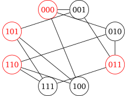
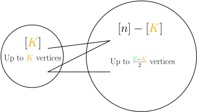

Möbius Transform Based Bounds for Constant Weight Codes
Daniel Brosch
University of Klagenfurt
Joint work with Sven Polak.
July 10, 2023
Error correcting codes
Error correcting codes
Error correcting codes
Error correcting codes
Error correcting codes
Let $u,v\in \{0,1\}^n$ be binary strings (words) of length $n$.
The Hamming-distance of $u$ and $v$ is $$\mathrm{d_H}(u,v) = \lvert \{ i \enspace\colon\enspace u_i \neq v_i\}\rvert.$$
An $(n,d_\min)$-code is a set of words $C\subseteq \{0,1\}^n$ with $$\mathrm{d_H}(u,v) \geq d_\min \quad\text{for all } u,v\in C, u\neq v.$$
$${\color{darkorange}A(n,d_\min)} := \max_{(n,d_\min)\text{-code }C} |C|.$$
Constant weight code
The weight of a word is $$\mathrm{wt}(u) := \mathrm{d_H}(u, 0^n) = \lvert\{ i \enspace\colon\enspace u_i = 1\}\rvert.$$
An $(n, d_\min, w)$-constant weight code is a code consisting of words of a fixed weight $w$.
$${\color{darkorange}A(n,d_\min,w)} := \max_{(n,d_\min,w)\text{-code }C} |C|.$$
Existing bounds
Bound tables by Andries BrouwerIndependent set
Let $G=(V,E)$ be the graph with- vertices $V$$=\text{words of weight $w$}=\{0,1\}^n_{=w}$,
- an edge for every $u,v\in V$ with $\mathrm{d_H}(u,v)<d_\min$
Then clearly $A(n, d_\min, w) = \alpha(G)$.
Polynomial optimization
$$\small\begin{align} A(n, d_\min, w) = \max &\sum_v x_v\\ \text{s.t. }&x_vx_u = 0 \quad \text{if } \mathrm{d_H}(u,v)<d_\min,\\ & x_v \in \{0,1\} \quad \text{for all } v\in\{0,1\}^n_{=w}. \end{align}$$Convex relaxation: The Lasserre hierarchy
Let $\mathcal{C}_r = \{C \subseteq \{0,1\}^n \enspace \colon\enspace |C|\leq r\}$.$$\small \begin{align} \mathrm{Las}_{r}:=\sup &\sum y_{\{v\} }\\ \text{s.t. }& M(y):=\left(y_{C_1\cup C_2}\right)_{C_1, C_2 \in \mathcal{C}_r} \succcurlyeq 0\\ & y_C = 0 \quad \text{ if $C$ is not an $(n, d_\min, w)$-code}\\ & y_C \in \mathbb{R} \quad \text{for }C\in\mathcal{C}_{2r}. \end{align} $$
We have $\mathrm{Las}_r \geq A(n, d_\min, w)$ and $\mathrm{Las}_{A(n, d_\min, w)} = A(n, d_\min, w)$.
Convex relaxation: The Lasserre hierarchy
Every fixed level of the Lasserre hierarchy can be computed in polynomial time in $n$.The semidefinite constraint is of size $${\color{red}\Theta\left(n^{wr}\right)},$$ and grows too quickly for computations in practice.
SDP Symmetry reduction basics
Symmetric solutions
$S_n$ acts on the words $v=(v_1,v_2,\ldots, v_n)\in \{0,1\}^n$ by $$\sigma(v) = (v_{\sigma(1)}, v_{\sigma(2)}, \ldots, v_{\sigma(n)}) .$$This action extends to permute the rows and columns of the positive semidefinite matrix $$\sigma(M(y))=\left(y_{\sigma(C_1)\cup \sigma(C_2)}\right)_{C_1, C_2 \in \mathcal{C}_r} = M(\sigma(y)).$$
If $M(y)$ is positive semidefinite, then $\sigma(M(y))$ is as well!How do we exploit symmetries?
As the feasible set of an SDP is convex, we can average feasible solutions: $$\mathcal{R}(M(y)) := \frac{1}{|{\color{darkorange}S_n}|} \sum_{ {\color{darkorange}\sigma}\in {\color{darkorange}S_n} }{\color{darkorange}\sigma}(M(y))$$ $\mathcal{R}(X)$ is again feasible, with the same objective value as $X$!Symmetric optimal solutions
Block-diagonalization
is positive semidefinite if and only if
- ${\color{red}A} + {\color{darkorange}B} + {\color{green}C} \geq 0$,
- ${\color{red}A} -\frac{\sqrt{5}+1}{4}{\color{darkorange}B}+\frac{\sqrt{5}-1}{4}{\color{green}C} \geq 0$.
-
${\color{red}A} +\frac{\sqrt{5}-1}{4}{\color{darkorange}B} - \frac{\sqrt{5}+1}{4}{\color{green}C} \geq
0$,
but the sum of the block sizes is often significantly lower than $n$!
Symmetry reduced Lasserre hierarchy for constant weight codes
- [Schrijver, 1979]: The first level $\mathrm{Las}_1$ with entrywise nonnegativity is equivalent to the Delsarte LP-bound for constant weight codes.
- [Schrijver, 2005] computes a 3-point bound (in between $\mathrm{Las}_1$ and $\mathrm{Las}_2$).
- [Polak, 2019] computes a 4-point bound, and in some small cases the full second level $\mathrm{Las}_2$.
Razborov style hierarchy
Prioritizing codes on few vertices

Möbius-transforms (Not to be confused with Möbius-transformations)
Well-known fact: The $n$'th level of the Lasserre hierarchy is sharp.
Proof idea: Applying a Möbius-transform to the rows and columns of the SDP diagonalizes the hierarchy.
The second level of the Lasserre hierarchy involves a matrix $\color{darkorange}X$ of the form $$\small\begin{pmatrix}1 & x_1 & x_2 & x_1x_2\\ x_1 & x_1 & x_1x_2 & x_1x_2\\ x_2 & x_1x_2 & x_2 & x_1x_2\\ x_1x_2 & x_1x_2 & x_1x_2 & x_1x_2\end{pmatrix} $$
Möbius-transform based symmetry reduction
Normally, we can only apply the transform to the final level of the Lasserre hierarchy.
We truncate the Lasserre hierarchy in such a way, that we can apply the transform earlier to sub-problems, partially diagonalizing it.
Back to codes
We are in the setting of- variables $x_{u}\in\{0,1\}$ corresponding to words $u$,
- monomials $C$ corresponding to codes.
Prioritizing "small" codes
The maximal cliques
For each ${\color{darkorange}K}\leq {\color{green}T}$ with ${\color{darkorange}K}\enspace\mathrm{mod}\enspace 2\equiv {\color{green}T}$, the maximal clique $\mathcal{B}_{\color{darkorange}K}$ contains the codes of the form:
Example: Maximal clique $w=3, {\color{green}T} = 5, {\color{darkorange}K} = 3$
$\mathcal{B}_{\color{darkorange}K}$ contains the codes with support in $[{\color{darkorange}K}] = \{1,2,3\}$ and one additional coordinate. $$\small\mathcal{B}_3 = \{1,x_{123},x_{12i}, x_{13i},x_{23i}, x_{123}x_{12i}, x_{123}x_{13i},x_{123}x_{23i},\}$$Symmetry reduction
Symmetry reduction is trivial: We only consider the maximal cliques up to symmetry!Möbius transform
Each clique $\mathcal{B}_{\color{darkorange}K}$ is closed under addition of words with support within $[{\color{darkorange}K}]$.
If $C_1\vert_{[{\color{darkorange}K}]} \neq C_2\vert_{[{\color{darkorange}K}]}$, then the product of the transformed codes is zero.
$\longrightarrow$ One block for each code on $[K]$. We only need to consider codes up to isomorphism!
Example: Maximal clique $w=3, {\color{green}T} = 5, {\color{darkorange}K} = 3$
$$\small\mathcal{B}_3 = \{1,x_{123},x_{12i}, x_{13i},x_{23i}, x_{123}x_{12i}, x_{123}x_{13i},x_{123}x_{23i},\}$$ Splits into $$\small\left\lbrace {\color{darkorange}x_{123} }x_{12i}, {\color{darkorange}x_{123} }x_{13i}, {\color{darkorange}x_{123} }x_{23i}\right\rbrace$$ and $$\small\left\lbrace {\color{darkorange}(1-x_{123})}, {\color{darkorange}(1-x_{123})}x_{12i}, {\color{darkorange}(1-x_{123})}x_{13i}, {\color{darkorange}(1-x_{123})}x_{23i}\right\rbrace$$Breaking Schur's Lemma
- If $\color{darkorange}M$ and $\color{darkorange}N$ are not isomorphic, then ${\color{green}\varphi} \equiv 0$.
- If ${\color{darkorange}M}\simeq {\color{darkorange}N}$ and $R$ is an algebraically closed field, then ${\color{green}\varphi} = c\mathrm{I}$ for a $c\in R$.
Additional symmetries
We obtain one block for each code $\color{green}C$ on up to $\color{green}T$ coordinates.
Connection to Razborov's hierarchy for flag algebras
We obtain blocks for each code ${\color{green}C}$ with symmetry $$\mathrm{Aut}({\color{green}C}) \times S_{n-|\mathrm{supp}({\color{green}C})|}. $$
We obtain the Flag Algebra $\mathcal{A}^{\color{green}C}$ of type ${\color{green}C}$ by restricting to the elements invariant under $S_{n-|\mathrm{supp}({\color{green}C})|},$ and letting $n$ run to infinity.
We call the thus obtained hierarchy $\mathrm{Raz}_{\color{green}T}$.
Comparing the hierarchies
In the setting of codes of constant weight $w$ we have \begin{equation} \mathrm{Las}_{ {\color{darkorange}d} } \geq \mathrm{Raz}_{2w\color{darkorange}d} \end{equation} and \begin{equation} \mathrm{Raz} _{\color{green}T} \geq \mathrm{Las} _{\binom{ {\color{green}T} }{w} }, \end{equation} where lower means better.Results: Case $A(n,d,w) = A(11,4,3) = 17$
Here the Delsarte-, 3-point, 4-point and $\mathrm{Las}_2$-bounds are all $18\frac{1}{3}$.
We can compute $$\begin{align} \mathrm{Raz}_3 &= 165.0\quad \text{(3 variables)}\\ \mathrm{Raz}_4 &= 18.33\quad \text{(6 variables)}\\ \mathrm{Raz}_5 &= 18.33\quad \text{(11 variables)}\\ \mathrm{Raz}_6 &= 18.33\quad \text{(30 variables)}\\ \mathrm{Raz}_7 &= {\color{darkorange}18.08}\quad \text{(90 variables)}\\ \mathrm{Raz}_8 &= {\color{darkorange}17.51}\quad \text{(497 variables)}\\ \mathrm{Raz}_9 &= {\color{darkorange}17.51}\quad \text{(5044 variables)}\\ \end{align}$$
(Early) numerical results
- We always reach at least the Delsarte-bound.
- In some cases we improve over $\mathrm{Las}_2$, but not enough to improve best known bounds.
The SDPs are still quite small (order thousands of total variables in the blocks), the bottleneck is the computation of the coefficients of the hierachy itself.
Summary
- We propose a new hierarchy of upper bounds for error correcting codes.
- When working with binary variables, we can potentially do better symmetry reductions than Schur's Lemma implies.
- Similar hierarchies may lead to improved bounds for other problems.